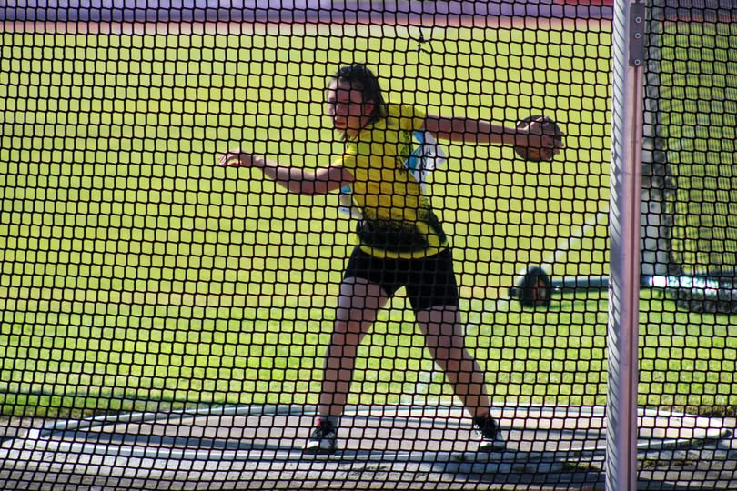

Camélia Terentiy foi 4ª e obteve marca de qualificação para o Campeonato Nacional de Sub-23 na prova de lançamento do disco ao lançar 35.19m.
Rodrigo Silva foi 5º no lançamento do disco (2kg) ao lançar 36.17m.
Mariana Peralta foi 5ª no lançamento do martelo (3kg) com a marca de 32.90m.
Parabéns a todos!
Camélia com Marca de Qualificação Nacional Sub-23
O Centro Nacional de Lançamentos recebeu no dia 30 de maio a 4ª Jornada de Lançamentos.
